One way to keep track of tweets that you want to follow up on is to “like” them to review at a later time. I posted my method for that here: How to Create a Microsoft To-Do Task from a Liked Tweet using IFTTT.
But we all don’t want to reserve “like” as a bookmark feature, so let’s chat about other options.
Twitter Bookmarks
You can use the built in Twitter Bookmarks feature (Only works on mobile, not web)
Twitter Private Message
You can send them to yourself in a Twitter private message.
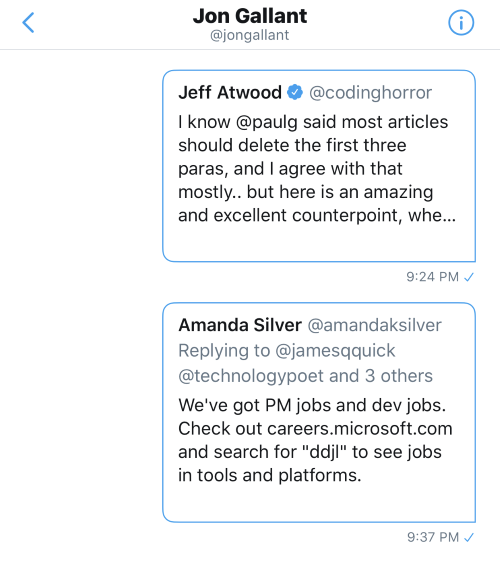
Share Via…IFTTT -> iOS Reminders -> Microsoft To-Do Task
You can save them as a Microsoft To-Do Tasks via the iOS Share Menu and IFTTT. (Only works on mobile, not web)
I gush about the Microsoft To-Do a lot these days - it’s awesome. Definitely check it out if you haven’t: Microsoft To-Do
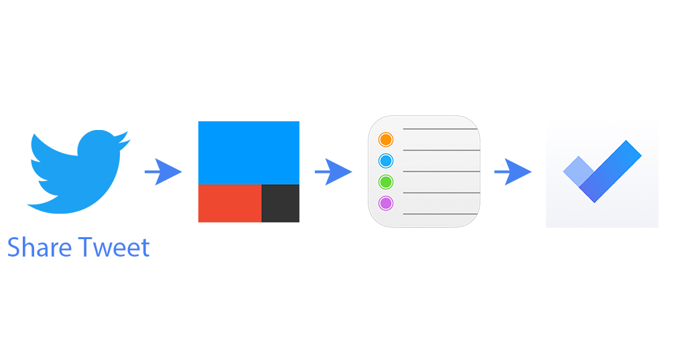
Here’s how that works:
- View a tweet
- Click the Share icon
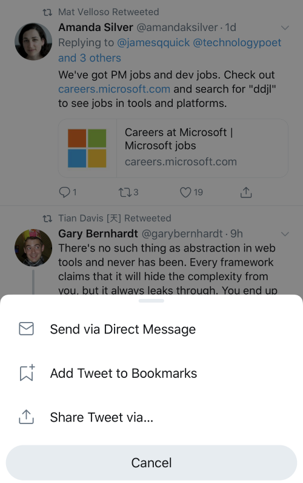 - Select “Share Tweet via…”
- Select IFTTT
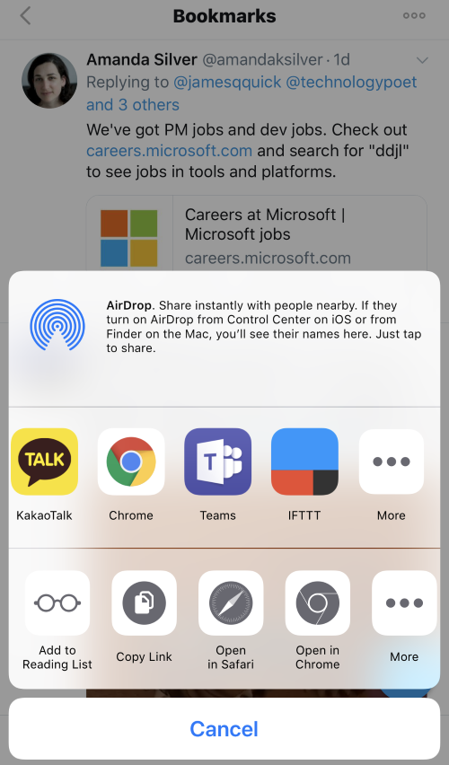 - Click Post
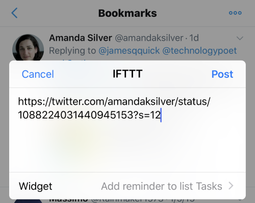 - IFTTT will save as an iOS Reminder
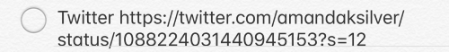 - Microsoft To-Do will read that Reminder and create a Task from it.
- View Task in To-Do app

Setup
Here’s how to get this all setup:
-
Install the Microsoft To-Do app.
-
Enable iOS Reminder and To-Do Integration
- Add your email account to the iOS device

- Go to Settings -> Reminders and select the Default List from your email account


- Add your email account to the iOS device
-
Install the IFTTT app.
- When the app loads it will ask you to enable reminder integration. Select OK.
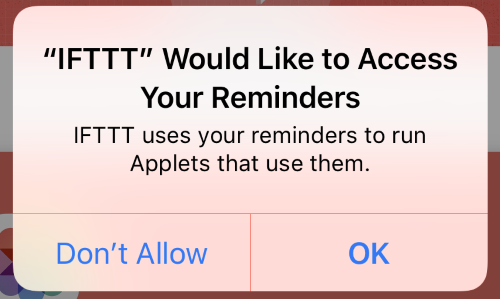
- When the app loads it will ask you to enable reminder integration. Select OK.
-
Create an IFTTT applet in the iOS app.
- Go to My Applets and click the + sign
- Click “this” and select Note widget

- Click “Any new note”
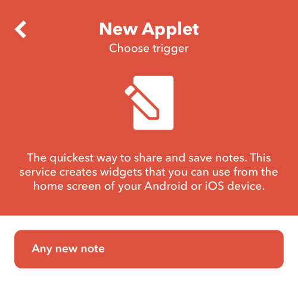 - Click “that” and select iOS Reminders
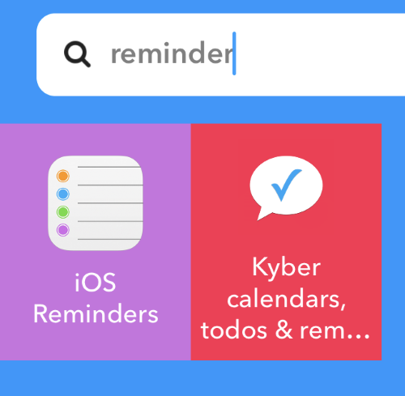 - Click “Add reminder to list” and enter your settings:
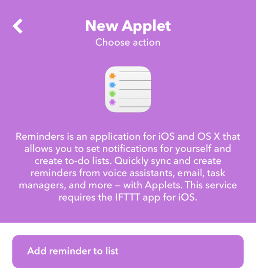
I use the following settings:
- Reminder = Twitter NoteText (I did try various settings here and this was the one that consistently worked. It did not work anytime I included {{Text}})
- List Name = Tasks (which is the same as the iOS Reminder default reminder list in iOS Settings->Reminders)
- Priority = None
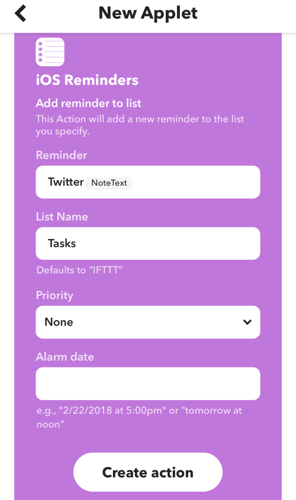
- Click “Create action” and then “Finish”
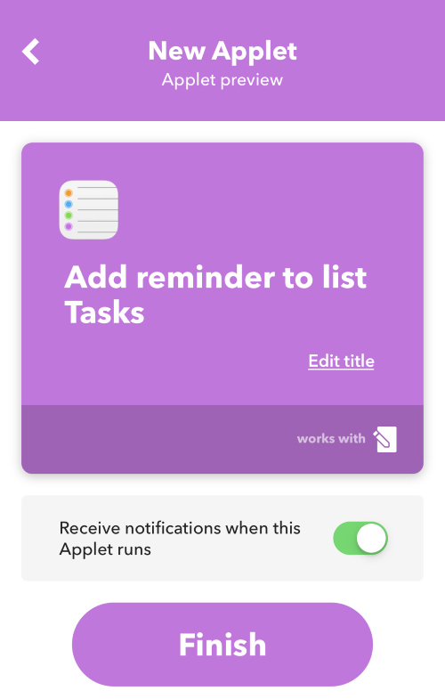
Now, head over to the Twitter app, Share Tweet via…IFTTT and then view them in your Microsoft To-Do Task list.
What are some other ways you like to keep track of tweets you’d like to follow up on?
Jon